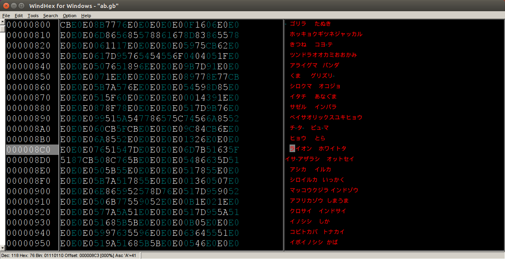
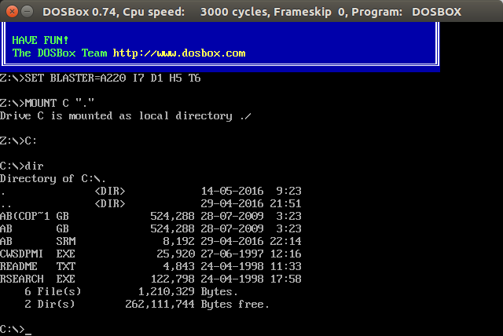
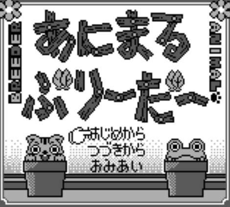
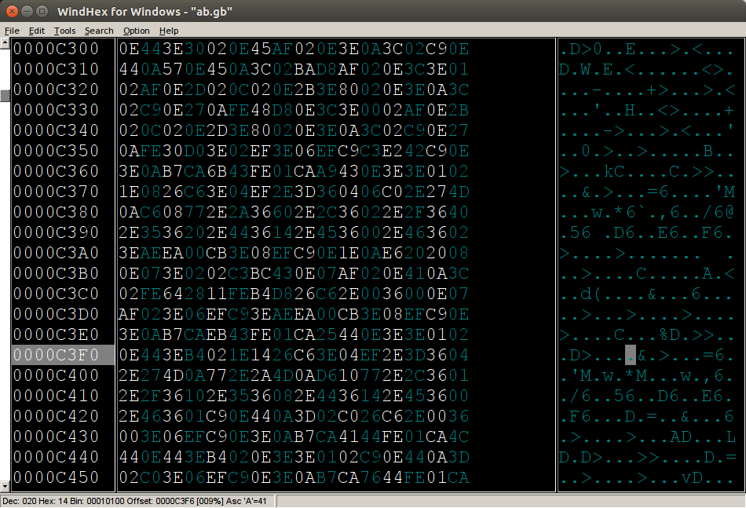
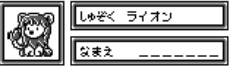
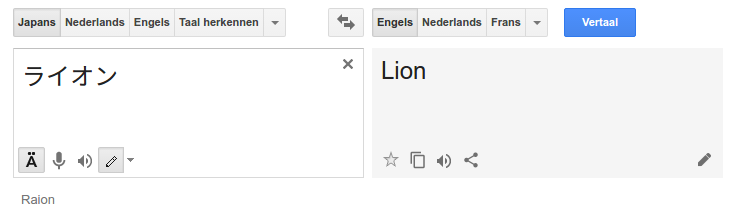
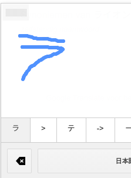
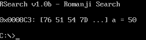
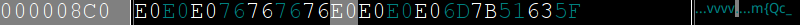
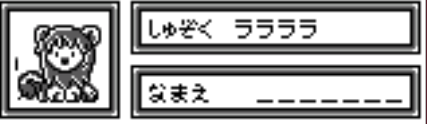

About me
Why should we do it?
Graphical/Sound optimizations
New levels/items
Changing the text
Tools
hex editor
relative searcher
(tile browser)
hex editors
hex workshop
winhex
010 editor
windhex

Relative searcher
monkey moore
Rsearch

Tile browser
infontile
The game
Animal Breeder (gameboy)


Lets begin
Searching the text

-->
Searching the text




Changing the text


found letters
Table file:
00=あ
01=い
02=う
03=え
04=お
05=か
06=き
07=く
08=け
09=こ
0A=さ
0B=し
0C=す
0D=せ
0E=そ
0F=た
10=ち
11=つ
12=て
13=と
14=な
15=に
16=ぬ
17=ね
18=の
19=は
1A=ひ
1B=ふ
1C=へ
1D=ほ
1E=ま
Relative searching...but how??
abc alphabet order:
a = first letter
b = second letter
c = third letter
file:
04 05 06 07 08
results:
1) 04 05 06
2) 05 06 07
3) 06 07 08
Workflow
alphabet:
あいうえお = aiueo = 00 01 02 03 04
かきくけこ = kakikukeko = 05 06 07 08 09
さしすせそ = sashisuseso = 0A 0B 0C 0D 0E
たちつてと = tachitsuteto = 0F 10 11 12 13
なにぬねの = naninuneno = 14 15 16 17 18
はひふへほ = wahifueho = 19 1A 1B 1C 1D
まみむめも = mamimumemo = 1E 1F 20 21 22
やゆよ = yayuyo = 23 24 25
らりるれろ = rarirurero = 26 27 28 29 2A
わん”。ー = wao".ｰ = 2B 2D ?? ?? ??
を = 2C
ぁぃぅぇぉ = aiueo = 2E 2F 30 31 32
ゃゅょっ = ~ya~yu~yo~tsu = 33 34 35 36